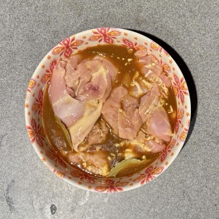
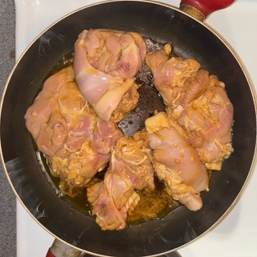
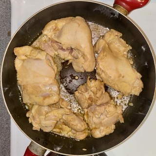
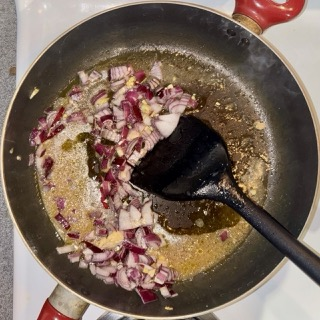
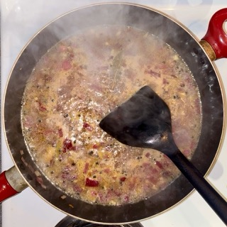
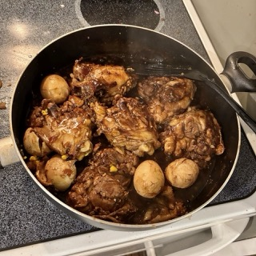

Ingredients
- 6 chicken thigh fillets, boneless and skinless
- 6 garlic cloves, minced
- 1/3 cup soy sauce
- 1/3 cup + 2 tbsp white vinegar
- 3 dried bay leaves
Marinating
- 2 tbsp olive or coconut oil
- 1 small brown onion, diced
- 1 1/2 cups water
- 2 tbsp brown sugar
- 1 tbsp whole black pepper
- 6 peeled, medium-boiled eggs (optional)
Cooking
- Gluten allergy/intolerance? Use 1/3 cup of coconut aminos! It'll have the same great flavor.
- Scaling the recipe up? Use less black pepper (it goes a long way).
- Out of brown sugar? You can substitute white sugar, or even replace the water with apple juice.
Substitution Tips
Directions
Marinating
- Prepare the marinading ingredients. Save half of the minced garlic cloves for the cooking step. 
- Combine these ingredients into a bowl, and let marinate in the fridge for at least 20 minutes, or up to overnight.
Cooking
-


- Fully heat 1 tbsp oil in a skillet at medium high. Remove the chicken from the marinade and place it in the pan, saving the marinade. Sear each side until the chicken turns white, which takes about 1 minute.
- Set the chicken aside on a plate. 
- Add the rest of the oil to the skillet, along with the garlic and onion. Cook for two minutes. 
- Add the reserved marinade, water, sugar and black pepper. Bring it to a simmer then turn heat down by 1 or 2. Simmer for 5 minutes.
- Add chicken smooth side down. If you are using eggs, add these to the skillet as well.
- After chicken reaches a simmer, set a timer for 15 minutes. Flip the chicken when the timer finishes.
- Continue simmering until the sauce has a jam-like consistency, coating the chicken enough to visibly change its color when flipped. 
- If it does not reach this thickness after 15 minutes, remove chicken and continue simmering the sauce. Then, add the chicken back in.
- Coat chicken in glaze then serve over rice.